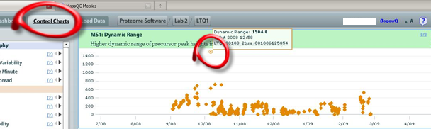

Often we see signal saturation when sensitivity is above average.

From the Dashboard view in MassQC, you can clearly see that the MS1 metrics are very high and out of range. The Ion Inject Time actually went down because there were more ions going into the trap quickly, thereby filling it up faster. If you want to get a closer look at how this compares to your historical data, you would click the Control Charts tab. Below, we see that the Dynamic Range at the MS1 level is quite high, further indicating that signal saturation has occurred:

A good example of several metrics reinforcing an obvious over-saturation diagnosis. So what causes this type of saturation? Several factors come into play here. You could have loaded too much sample , triggering could be occurring on noise or unimportant peaks, Spray Instability affects cause signal to jump periodically, to name a few. Most importantly, you now have several clues to further troubleshoot your cause for saturation .